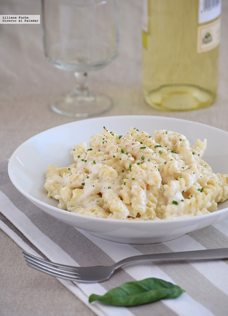

Pasta con nata italiana
El auténtico sabor de la sencillez italiana:
una salsa irresistiblemente cremosa que abraza la pasta en cada bocado

Ingredientes
- 200 g a 250 g de pasta
- 200 ml de nata líquida para cocinar
- 50 g de queso Parmigiano Reggiano
- 100 g de jamón cocido
- Sal y pimienta negra al gusto
- Una pizca de nuez moscada (opcional)
Pasos a seguir
-
Cocinar la pasta: Pon a cocer la pasta en una olla con abundante agua
hirviendo y sal. Retírala un minuto antes del tiempo indicado para que
quede al dente. Guarda un poco del agua de la cocción antes de
escurrirla.
-
Hacer la salsa: En una sartén amplia a fuego medio, calienta la nata
líquida con los daditos de jamón cocido si decides usarlos.
-
Añadir el queso: Agrega el queso Parmigiano Reggiano rallado, una pizca
de pimienta negra y la nuez moscada. Remueve a fuego suave hasta que el
queso se derrita y la salsa esté homogénea.
-
Integrar: Incorpora la pasta escurrida directamente en la sartén con la
salsa. Añade un par de cucharadas del agua de cocción reservada para que
la salsa se adhiera mejor a la pasta.
-
Servir: Mezcla todo durante un minuto a fuego vivo y sirve
inmediatamente con un poco más de queso parmesano por encima.